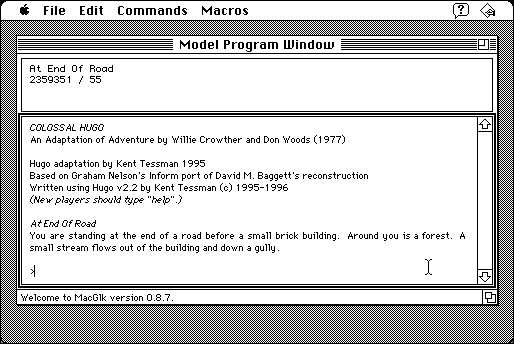

Download
hugov31_macglk_3.1.03.zip (291K) Glk Hugo 3.1.03 repackaged into a zipped hfs disk image and checksum file. The disk image can be mounted with Mini vMac.
hugov31_macglk_3.1.03.sit (279K) Glk Hugo 3.1.03 in the original format.
copyright: Kent Tessman, Andrew Plotkin
mod date: Jan 5, 2006
license: Freeware
official url :
http://www.ifarchive.org/if-archive/programming/hugo/
Interpreter for Hugo interactive fiction adventures. Requires System 7. Source code is available (below).

Download Source
hugov31_glk_source.zip (33K) Hugo 3.1.03 additional source for Glk library.
hugov31_source.tar.gz (193K) Hugo 3.1.03 source.
If you find these downloads useful, please consider helping the Gryphel Project, which hosts them.
Here are the md5 checksums for the downloads, signed with Gryphel Key 5:
--------- GRY SIGNED TEXT --------- 74242a99b40c0669ddbc20694fb6e29f hugov31_macglk_3.1.03.zip dca458453583a7133fb010120d1778e5 hugov31_macglk_3.1.03.sit e74ef9ee30f98dc8adb5599d6573d87c hugov31_glk_source.zip 7849650875c1955ec141ddae041bcd24 hugov31_source.tar.gz ------- BEGIN GRY SIGNATURE ------- Gry/4Xa8CFcUzxdN/PuAbMwGcLv8OocwFGSSfbS6Lk3ZVIhCD6HHJ1+xtbw4J7Yu WJ+ZP1ZaIC+TOXONAbJPrejDQoG9Vrt7T/WjjKFm9DH0SpzXVV+SuGoAUDnb6KxX 4iRhg2XdmvYLdxBiqVW+NLJCQgtkxXHRhWhYhEqwZzyCii5DWxA0/RhMx2FLKFVO -------- END GRY SIGNATURE --------